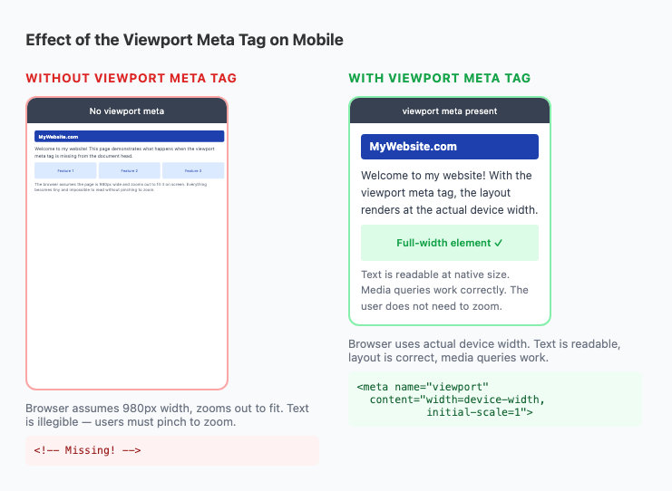
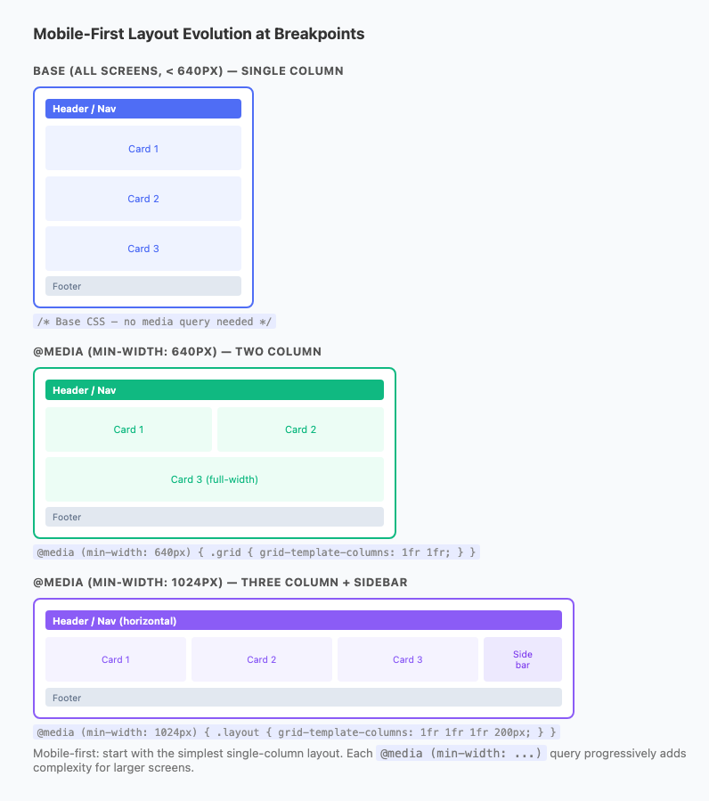
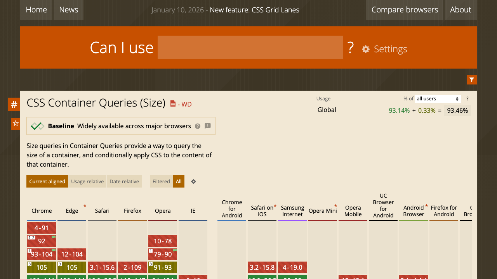
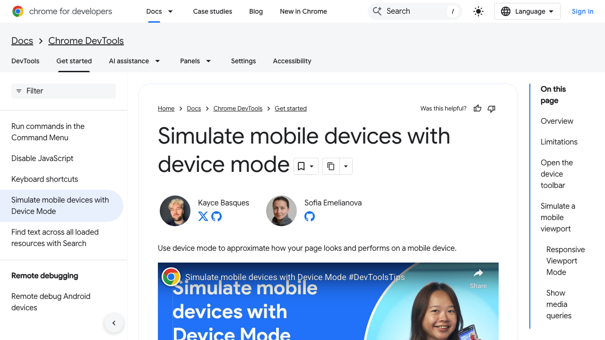

Responsive Web Design
One codebase. Every screen. No compromises.
@media queries with min-widthclamp()srcset, sizes, <picture>@container)dvh, svh, lvhHow We Got Here
m.example.com subdomain with a stripped-down site.clamp(), dynamic viewport units (dvh), :has(), cascade layers — CSS finally solves problems that required JavaScript workarounds for years.Mobile-First Design
Design and code for the smallest screen first, then add layout complexity for larger screens. Think of packing a carry-on: include only what's essential, then add extras if you have a bigger bag.
.nav { flex-direction: column; }
@media (min-width: 640px) {
.nav { flex-direction: row; }
}
Start simple. Add to it as space grows.
.nav { flex-direction: row; }
@media (max-width: 639px) {
.nav { flex-direction: column; }
}
Start complex. Strip it back — harder.
Real-World Mobile-First Examples
.nav-links { display: none; } /* mobile: hidden */
.hamburger { display: block; } /* mobile: show */
@media (min-width: 768px) {
.nav-links { display: flex; } /* desktop: show */
.hamburger { display: none; } /* desktop: hide */
}
.card-grid { grid-template-columns: 1fr; }
@media (min-width: 640px) {
.card-grid { grid-template-columns: 1fr 1fr; }
}
@media (min-width: 1024px) {
.card-grid { grid-template-columns: repeat(3, 1fr); }
}
The Viewport Meta Tag
Before writing a single line of responsive CSS, this tag must be in your <head>. Without it, all your media queries will fail on mobile.
<!DOCTYPE html>
<html lang="en">
<head>
<meta charset="UTF-8">
<!-- THIS is the magic line -->
<meta name="viewport"
content="width=device-width,
initial-scale=1">
<title>My Responsive Site</title>
<link rel="stylesheet" href="style.css">
</head>user-scalable=no or maximum-scale=1. Blocking zoom is an accessibility violation. WCAG 1.4.4 requires text can be resized to 200%.What each attribute does
width=device-width
Sets the viewport width to match the actual physical screen width. Without this, mobile browsers assume the site is 980px wide and zoom it out to fit.
initial-scale=1
Starts the page at 1:1 zoom — no automatic scaling. Text and elements appear at their natural CSS size.

Left: without tag (980px virtual, zoomed out). Right: with tag (real width).
Basic Media Query Syntax
A media query is a conditional block of CSS: if the condition is true, those styles apply. Think of it as an if statement for CSS.
/* These styles apply to ALL screens */
body {
font-size: 1rem;
padding: 1rem;
}
/* Only when viewport is ≥ 640px */
@media (min-width: 640px) {
body {
font-size: 1.1rem;
padding: 2rem;
}
}
/* Only when viewport is ≥ 1024px */
@media (min-width: 1024px) {
.container {
max-width: 1200px;
margin-inline: auto;
}
}
/* Print: hide nav and buttons */
@media print {
nav, button, .ad { display: none; }
body { color: black; background: white; }
}Common media features
@media (min-width: 640px) { }
@media (max-width: 639px) { }
@media (640px <= width < 1024px) { }
@media (prefers-color-scheme: dark) { }
@media (prefers-reduced-motion: reduce) { }
@media (hover: hover) { } /* mouse device */
@media (orientation: landscape) { }
@media print { }
@media keyword is required. The condition goes in parentheses. Curly braces hold the scoped styles.min-width vs max-width
.grid {
/* mobile: 1 column (default) */
display: grid;
grid-template-columns: 1fr;
gap: 1rem;
}
@media (min-width: 640px) {
/* tablet: 2 columns */
.grid { grid-template-columns: 1fr 1fr; }
}
@media (min-width: 1024px) {
/* desktop: 3 columns */
.grid { grid-template-columns: repeat(3,1fr); }
}.grid {
/* desktop: 3 columns (default) */
display: grid;
grid-template-columns: repeat(3, 1fr);
gap: 1rem;
}
@media (max-width: 1023px) {
/* must override back to 2 */
.grid { grid-template-columns: 1fr 1fr; }
}
@media (max-width: 639px) {
/* must override again to 1 */
.grid { grid-template-columns: 1fr; }
}Combining Conditions
/* Between 640px and 1023px only */
@media (min-width: 640px)
and (max-width: 1023px) {
.sidebar { display: none; }
}
/* Modern range syntax */
@media (640px <= width < 1024px) {
.sidebar { display: none; }
}
/* Dark mode */
@media (prefers-color-scheme: dark) {
:root {
--bg: #0f172a;
--text: #f1f5f9;
--card-bg: #1e293b;
}
}
/* Respect reduced motion */
@media (prefers-reduced-motion: reduce) {
*, *::before, *::after {
animation-duration: 0.01ms !important;
transition-duration: 0.01ms !important;
}
}
/* Touch-only styles (no hover) */
@media (hover: none) {
.tooltip { display: none; }
}
/* Print styles */
@media print {
nav, .ads, button { display: none; }
}Logical keywords
and— both conditions must be true,— acts as OR (either condition)not— negates the condition
Level 4 Range Syntax
Modern browsers support comparison operators directly in queries:
(640px <= width < 1024px)
(height > 500px)
(aspect-ratio >= 16/9)Dark Mode & User Preferences
Users set system-level preferences — dark mode, reduced motion, high contrast — in their OS settings. CSS can read these preferences and adapt automatically with no JavaScript.
/* ---- Dark Mode ---- */
:root {
--bg: #ffffff;
--text: #1e293b;
--card: #f8fafc;
}
@media (prefers-color-scheme: dark) {
:root {
--bg: #0f172a;
--text: #f1f5f9;
--card: #1e293b;
}
}
body {
background: var(--bg);
color: var(--text);
}
/* ---- Reduced Motion ---- */
@media (prefers-reduced-motion: reduce) {
*, *::before, *::after {
animation-duration: 0.01ms !important;
transition-duration: 0.01ms !important;
scroll-behavior: auto !important;
}
}
/* ---- High Contrast ---- */
@media (prefers-contrast: more) {
.card {
border: 2px solid currentColor;
}
}Live Demo: Simulating Dark Mode
Component adapts to the OS preference automatically.
prefers-color-scheme automatically. The button above simulates toggling it.@media block is all you need.Choosing Breakpoints
Don't choose breakpoints based on device sizes — devices change every product cycle. Instead: let your content decide. Slowly resize your browser and add a breakpoint when the layout looks awkward.

Common starting framework
- Default — < 640px — single col, stacked nav
- Medium — ≥ 640px — 2-col, horizontal nav
- Large — ≥ 1024px — 3+ col, sidebar
- XL — ≥ 1280px — generous whitespace
Live: Your Window Right Now
Resize your browser window to see the breakpoint change in real time.
sm: 640px • md: 768px • lg: 1024px • xl: 1280px
Responsive Typography with clamp()
clamp(min, preferred, max) — the browser uses the preferred value but never goes below min or above max. Using vw as the preferred makes fonts scale fluidly with the viewport.
clamp(1.5rem, 4vw + 1rem, 3rem)
- 1.5rem — floor: never smaller than 24px
- 4vw + 1rem — fluid middle: scales with viewport
- 3rem — ceiling: never larger than 48px
h1 { font-size: clamp(1.5rem, 4vw + 1rem, 3rem); }
h2 { font-size: clamp(1.25rem, 3vw + .5rem, 2rem); }
p { font-size: clamp(1rem, 1.5vw + .5rem, 1.25rem); }| Viewport | h1 size | p size |
|---|---|---|
| 320px (min) | 24px (1.5rem) | 16px (1rem) |
| 768px | — | — |
| 1024px | — | — |
| 1280px (max) | 48px (3rem) | 20px (1.25rem) |
Live Calculator
4vw + 1rem means "4% of viewport width plus 16px offset." The + rem offset prevents text from becoming too small at narrow widths.Fluid Spacing with clamp()
clamp() works on any CSS length property — not just font sizes. Use it for padding, gap, and margin so the entire page breathes proportionally at every width.
/* Padding scales 1rem → 3rem */
.section {
padding-block: clamp(1rem, 5vw, 3rem);
padding-inline: clamp(1rem, 8vw, 6rem);
}
/* Store as a variable, reuse everywhere */
:root {
--space-fluid: clamp(1rem, 3vw, 2rem);
}
.card-grid { gap: var(--space-fluid); }
/* Fluid container: fill screen, cap at 1200px */
.container {
width: min(100% - 2rem, 1200px);
margin-inline: auto;
}
/* min() / max() — siblings of clamp() */
font-size: max(1rem, 2vw); /* never below 1rem */
width: min(100%, 800px); /* narrower of the two */Live: Fluid Padding Demo
padding: clamp(1rem, 5vw, 3rem)Current computed: —
padding: 1rem on mobile and padding: 3rem on desktop with a breakpoint.Responsive Images: The Baseline
Step 1: The global reset (every project)
/* Add to every CSS reset */
img, video, svg {
max-width: 100%;
height: auto;
display: block;
}max-width: 100% prevents images from overflowing their container. height: auto maintains the original aspect ratio as width shrinks.
Step 2: object-fit for fixed containers
Card thumbnails and avatars need a fixed height. Without object-fit, the image distorts to fill the box:
.card-thumb {
width: 100%;
height: 200px; /* fixed height */
object-fit: cover; /* fills, crops edges */
object-position: center top; /* keep top in frame */
}
/* Values: cover | contain | fill | none | scale-down */Live: object-fit Demo
- cover — fills the box, crops the excess (most common)
- contain — fits entirely inside, letterboxes
- fill — stretches to fill (distorts)
srcset and sizes
Provide multiple image files at different sizes. The browser picks the right one based on screen width and device pixel ratio — saving bandwidth on mobile.
<img
src="hero-800.jpg"
srcset="hero-400.jpg 400w,
hero-800.jpg 800w,
hero-1600.jpg 1600w"
sizes="(max-width: 640px) 100vw,
(max-width: 1024px) 50vw,
800px"
alt="Mountain panorama"
width="800"
height="450"
loading="lazy"
>- Check
sizesto know how wide the image displays at this breakpoint - Multiply by device pixel ratio (DPR)
- Pick the
srcsetentry that covers that many pixels
width and height attributes — they reserve space before load, preventing layout shift (CLS). Use loading="lazy" for below-fold images.Live: Which File Would the Browser Serve?
Art Direction with <picture>
The <picture> element lets you serve a completely different image at different breakpoints — not just a different resolution. Use it when a tall portrait crop works better on mobile than the wide landscape used on desktop.
<picture>
<!-- Portrait crop on narrow screens -->
<source
media="(max-width: 640px)"
srcset="hero-portrait.jpg"
>
<!-- WebP for supporting browsers -->
<source
type="image/webp"
srcset="hero-wide.webp 1200w,
hero-wide-sm.webp 600w"
sizes="(max-width:1024px) 100vw, 1200px"
>
<!-- Fallback img is REQUIRED -->
<img
src="hero-wide.jpg"
alt="Mountain panorama at sunrise"
width="1200"
height="630"
loading="lazy"
>
</picture>Live: Art Direction Simulator
Tight vertical — works on narrow screens
Full width — loads on wider screens
| Technique | Use case |
|---|---|
max-width:100% | Basic overflow prevention |
srcset + sizes | Same image, multiple resolutions |
<picture> | Different image per breakpoint or format |
Responsive Layout: Stack-to-Row
The most common pattern: elements stack vertically on mobile and line up horizontally on wider screens. This works for navigation, card grids, sidebars, and more.
/* Navigation: column → row */
.nav {
display: flex;
flex-direction: column; /* mobile default */
gap: .5rem;
}
@media (min-width: 640px) {
.nav { flex-direction: row; gap: 1.5rem; }
}
/* Page: stacked → sidebar + main */
.page-layout {
display: grid;
grid-template-rows: auto 1fr auto;
}
@media (min-width: 1024px) {
.page-layout {
grid-template-columns: 240px 1fr;
/* sidebar | main */
}
}
/* Tip: Flexbox = 1D (row OR column)
Grid = 2D (rows AND columns) */Live: Resize the Layout Demo
Intrinsic Grid — Zero Media Queries
CSS Grid's auto-fill + minmax() creates a truly responsive grid that adds and removes columns automatically — with no media queries at all.
/* The "RAM" pattern:
Repeat, Auto, Minmax */
.card-grid {
display: grid;
grid-template-columns:
repeat(auto-fill, minmax(280px, 1fr));
gap: 1.5rem;
}
/*
- Creates as many ≥ 280px cols as will fit
- Stretches all cols to equal widths (1fr)
- Adds/removes cols as container resizes
- Zero media queries needed!
*/Live: Drag the minmax Value
The aspect-ratio Property
Before: video embeds required a padding-bottom percentage hack. Today: aspect-ratio maintains proportions cleanly in one line.
/* OLD padding-bottom hack (no longer needed) */
.video-wrap-old {
position: relative;
padding-bottom: 56.25%; /* 16/9 = 0.5625 */
height: 0;
}
.video-wrap-old iframe {
position: absolute; inset: 0;
width: 100%; height: 100%;
}
/* MODERN: clean and simple */
.video-wrap { width: 100%; aspect-ratio: 16 / 9; }
.video-wrap iframe { width: 100%; height: 100%; }
/* Card thumbnail — always 4:3 */
.card-img {
width: 100%;
aspect-ratio: 4 / 3;
object-fit: cover;
}
/* Perfect square avatars */
.avatar { width: 48px; aspect-ratio: 1; }
.avatar { width: 48px; border-radius: 50%; }Live: Aspect Ratio Demo
| Ratio | Common use |
|---|---|
| 16 / 9 | Video, widescreen hero |
| 4 / 3 | Card thumbnails, older video |
| 1 / 1 | Avatars, icon squares |
| 3 / 2 | Photography (DSLR native) |
| 21 / 9 | Ultra-wide cinematic hero |
Dynamic Viewport Units: dvh, svh, lvh
On mobile, the browser address bar appears and disappears as you scroll. The old 100vh uses the total height including where the address bar lives — your hero often gets hidden behind it.
Live: Browser Chrome Effect
Drag slider to simulate address bar height
/* Old — may hide behind mobile address bar */
.hero { min-height: 100vh; }
/* Modern recommended */
.hero { min-height: 100dvh; }
/* With fallback */
.hero {
min-height: 100vh; /* old browsers */
min-height: 100dvh; /* modern override */
}Container Queries — The Problem They Solve
Media queries respond to the viewport size. But the same card component might appear in a wide main column on one page and a narrow sidebar on another. Media queries can't help — they don't know how much space the component actually has.
/* Step 1: Declare the container */
.card-wrapper {
container-type: inline-size;
/* Optional: name it */
container-name: card;
}
/* Step 2: Query the CONTAINER, not viewport */
.card { display: flex; flex-direction: column; }
@container (min-width: 400px) {
.card { flex-direction: row; }
}
/* Named container query */
@container card (min-width: 400px) {
.card-title { font-size: 1.25rem; }
}Live: Container Width Simulator
Same HTML — layout adapts to container width, not the viewport.
@container rule fires and the card switches to flex-direction: row — regardless of what the viewport width is.Container Query Syntax & Container Units
/* container-type values */
container-type: inline-size; /* tracks width */
container-type: size; /* width + height */
container-type: normal; /* off (default) */
/* Shorthand */
.card-wrapper {
container: card / inline-size;
}
/* Range conditions */
@container (min-width: 400px) { }
@container (max-width: 600px) { }
@container (400px <= width < 700px) { }
/* Container units — like vw but for the container */
.card-title {
/* 5% of the nearest container's width */
font-size: clamp(1rem, 5cqi, 1.5rem);
}
/* Available container units */
/* cqi = container inline size (width) */
/* cqb = container block size (height) */
/* cqw / cqh / cqmin / cqmax */
Supported: Chrome 105+, Firefox 110+, Safari 16+
- Media queries — page-level layout (columns, nav mode)
- Container queries — component-level adaptation (card layout, widget density)
The Hamburger Menu Pattern
<header>
<a href="/" class="logo">Brand</a>
<button class="menu-toggle"
aria-expanded="false"
aria-controls="nav-menu"
aria-label="Toggle navigation">
<span></span><span></span><span></span>
</button>
<nav id="nav-menu" hidden>
<a href="/">Home</a>
<a href="/about">About</a>
<a href="/contact">Contact</a>
</nav>
</header>/* Desktop: always show nav */
@media (min-width: 768px) {
.menu-toggle { display: none; }
nav[hidden] {
display: flex !important;
flex-direction: row;
}
}
/* JS toggle */
toggle.addEventListener('click', () => {
const open =
toggle.getAttribute('aria-expanded') === 'true';
toggle.setAttribute('aria-expanded', !open);
menu.hidden = open;
});Live Demo
Click ☰ to toggle. The icon animates to ✕.
Accessibility checklist
aria-expanded— announces open/closed state to screen readersaria-controls— links the button to the nav it controlsaria-label— names the button (not just "button")hiddenattribute — removes from accessibility tree entirely
Testing Responsive Designs
Chrome / Edge DevTools Device Mode
Open DevTools (F12), then click the device toolbar icon or press Ctrl+Shift+M / Cmd+Shift+M:
- Choose preset devices (iPhone, Pixel, iPad, Galaxy)
- Enter custom dimensions manually
- Set device pixel ratio (1×, 2×, 3×)
- Throttle network to simulate slow mobile
- Drag the viewport handle to watch breakpoints fire live

Chrome DevTools — Device Mode toolbar showing width × height + DPR controls
Testing workflow
What You Learned
min-width. Fewer overrides, cleaner CSS.min-width).prefers-color-scheme: dark + CSS custom properties = automatic dark mode with zero JavaScript.srcset + sizes for resolution switching. <picture> for art direction. object-fit for thumbnails.repeat(auto-fill, minmax()) — adds and removes columns as space changes. Zero media queries.@container responds to a component's parent width — not the viewport. Truly portable components.Common Questions
- Why does mobile-first use
min-widthinstead ofmax-width? - With mobile-first, you write the base styles for small screens first — no media query needed for mobile. You then use
min-widthto progressively add styles as the screen gets bigger. This produces less CSS overall because you're adding, not overriding. Desktop-first withmax-widthforces you to override your large styles back to small — more code, more specificity battles. - What breakpoints should I use?
- Let your content decide — resize your browser and add a breakpoint wherever the layout looks uncomfortable. That said, a practical starting framework: 640px (mobile → tablet), 1024px (tablet → desktop), 1280px (desktop → wide). These align with Tailwind CSS's
sm,lg, andxlbreakpoints, which are widely used in the industry. - What is the difference between
auto-fillandauto-fitin CSS Grid? - Both create as many columns as will fit. The difference appears when items don't fill all available columns.
auto-fillkeeps the empty column tracks — items stay at their minimum width.auto-fitcollapses empty tracks and lets filled items grow to use all space. For card grids,auto-fillis usually more predictable; useauto-fitwhen you want fewer items to span the full width.
More Common Questions
- When should I use container queries instead of media queries?
- Use container queries for components that need to adapt to their context — a card that appears in both a narrow sidebar and a wide main column should use
@containerso it responds to the space available, not the viewport. Use media queries for page-level changes — shifting to two columns, showing/hiding the mobile navigation, adjusting hero layout. - Should I use
pxorremfor breakpoints? - Accessibility experts recommend
rem: if a user sets their browser font size larger (for readability),px-based queries fire at the same viewport width regardless — potentially breaking the layout for those users.rembreakpoints scale with font size preference. In practice,pxis used in most frameworks (Tailwind, Bootstrap). Both are acceptable —remis more accessible. - Do I need to add a fallback for
dvh? - Yes, for older browsers. Write
vhfirst, thendvhon the next line — browsers that supportdvhuse it; older browsers fall back tovh. Supported in Chrome 108+, Safari 15.4+, Firefox 101+. Example:min-height: 100vh; min-height: 100dvh;